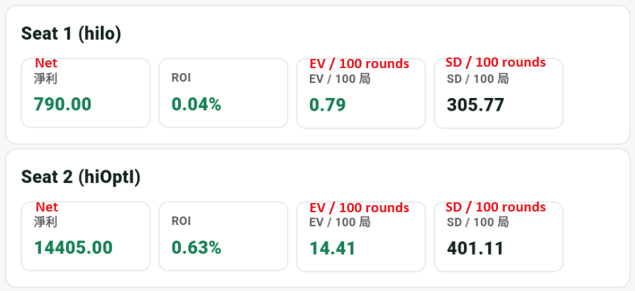

補充：Hi-Opt
Hi-Opt I 是比 Hi-Lo 更進階的系統。這個專案中的 Hi-Opt I 使用 playing count、ace side count，以及修正過的 betting / insurance true count。
Hi-Opt I 牌值
| 牌 | 計數 |
|---|---|
| 3-6 | +1 |
| 2、7、8、9 | 0 |
| 10、J、Q、K | -1 |
| A | 0，另外用 ace side count 追蹤 |
目前 App 的核心 index spec 包含 insurance、surrender、hard hand、10,10 分牌，以及部分 double。和 Hi-Lo 相比，Hi-Opt I 的概念更精細，但也多了 ace side count 與 true count 修正，因此實際結果會受到 Side A 的估算方式、下注門檻 k 值與使用情境影響。
App 模擬統計
以下是 Hi-Lo 與 Hi-Opt I 各跑 100000 局的比較。這組結果中 Hi-Opt I 的 EV 較高，但 SD / 100 局也較大；從整體來看，兩者差距沒有想像中明顯。

解讀這類比較時要保留一點彈性。Hi-Opt I 不是單純換一組牌值就能直接和 Hi-Lo 對照，因為它會搭配 A 的 side count，並依不同 k 值修正 betting / insurance true count。換句話說，單次模擬可以提供方向，但不適合只靠一張總表就判定哪個系統絕對比較好。
Hi-Opt I 比 Hi-Lo 更吃紀律與追蹤能力，建議先把基本策略與 Hi-Lo 練穩，再進階到 Hi-Opt I。